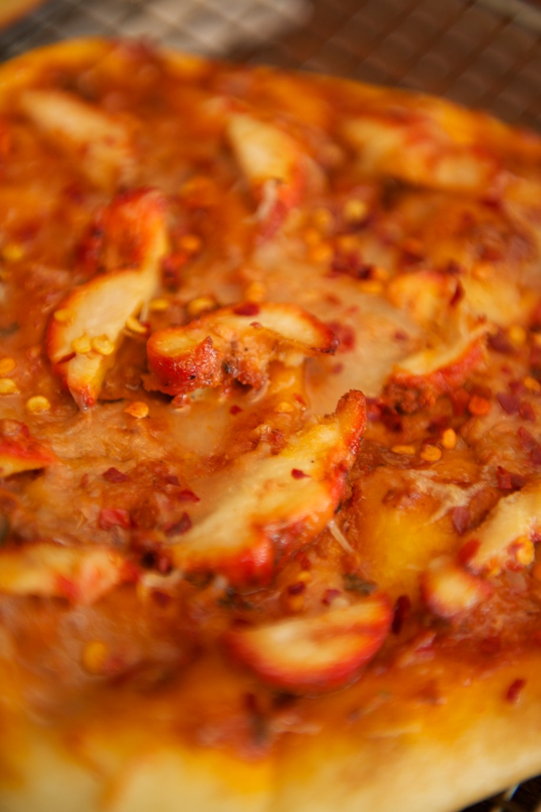

Grilled Naan Pizza
Ingredients
6 ounces Naan Pizza Dough, recipe follows.25 cup ghee (optional) or virgin olive oil, for brushing and drizzling
.5 teaspoon minced fresh garlic
.5 cup loosely packed shredded mozzarellabr
2 tablespoons freshly grated Pecorino Romanobr
6 tablespoons chopped canned tomatoes, in heavy puree
4 breasts of cooked tandoori chicken, thinly sliced
8 mint leaves
Preparation Method
Prepare a hot charcoal fire, setting the grill rack 3 to 4 inches above the coals. On a large, oiled, inverted baking sheet, spread and flatten the pizza dough with your hands into a 10 to 12-inch free-form oval shape, 1/8-inch thick. Do not make a lip; the shape is unimportant, but do take care to maintain an even thickness. When the fire is hot (when you can hold your hand over the coals for 3 to 4 seconds at a distance of 5 inches), use your fingertips to lift the dough gently by the 2 corners closest to you, and drape in onto the grill. Catch the loose edge on the grill first and slide the remaining dough into place over the fire. Within a minute the dough will puff slightly, the underside will stiffen, and grill marks will appear. Using tongs, immediately flip the crust over, onto the coolest part of the grill. Quickly brush the grilled surface with ghee or olive oil. Scatter the garlic and cheeses over the dough, and spoon dollops of tomatoes and sliced chicken over the cheese . Do not cover the entire surface of the pizza with tomatoes. Finally, drizzle the pizza with 1 to 2 tablespoons of ghee or olive oil. Slide the pizza back toward the hot coals, but not directly over them. Using tongs rotate the pizza frequently so that different sections receive high heat; check the underside often to see that it is not burning. The pizza is done when the top is bubbly and the cheese melted, about 6 to 8 minutes. Serve at once, topped with the mint leaves and additional olive oil, if desired.